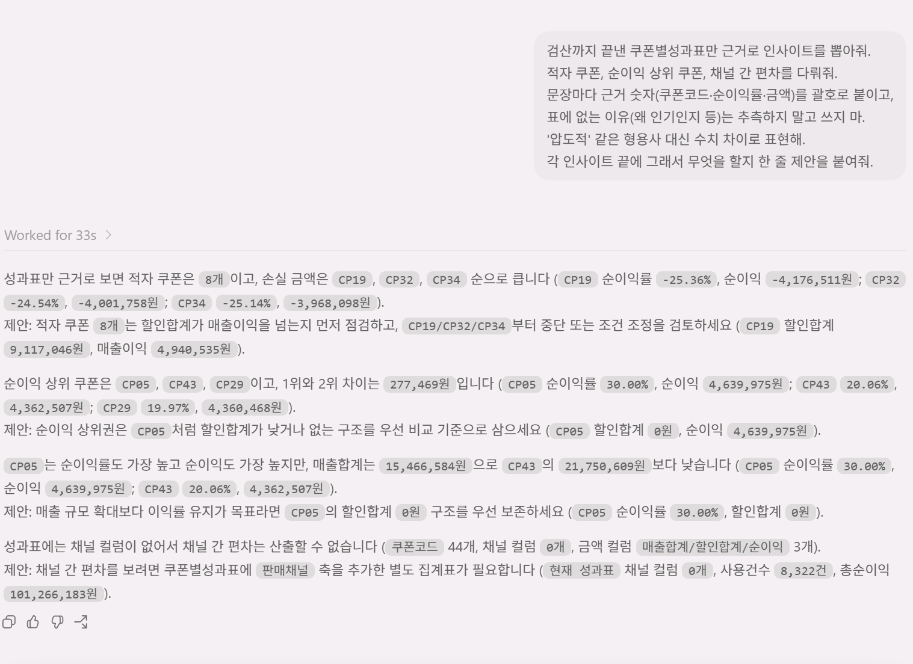

// 실습 3 · 쿠폰 성과 집계·인사이트
4 · 인사이트·검산¶
검산 마친 표를 들고 가면 사수가 묻습니다. "그래서 이 쿠폰들, 왜 적자야?" 표만 보면 할 말이 없습니다. 숫자는 '무엇'을 보여줄 뿐 '왜'는 안 알려주니, 이 단계에서 표를 해석해 "어떤 쿠폰을 접고 뭘 밀지"까지 뽑습니다.
조심할 것은 하나입니다. 생성형 AI는 그럴듯한 원인을 지어내는 걸 상당히 잘합니다. 그래서 자료 안에서만 근거를 찾게 못 박고, 숫자에 묶인 인사이트만 남깁니다.
직접 시켜보세요¶
3단계까지 검산한 성과표를 놓고 아래 두 체크리스트를 담아 인사이트를 뽑게 시킵니다.
프롬프트에 꼭 담을 것 ✅¶
- 근거 있는 인사이트 — 문장마다 근거 숫자 (어느 쿠폰·몇 %·몇 원)
- 다뤄야 할 것 — 적자 쿠폰 / 순이익 상위 쿠폰 / 채널 간 편차
- 행동 제안 — 각 인사이트에 이어질 다음 액션 (접기·확대·조건 변경)
이런 건 빼세요 ❌¶
- 데이터에 없는 인과 지어내기
- 과장 형용사 ("압도적으로" → "순이익률 20%p 높음"처럼 숫자로)
- 근거 숫자 없이 뭉뚱그린 총평 ("전반적으로 좋음")
예시 프롬프트¶
여러분 문장을 먼저 보낸 뒤에 열어보세요.
이렇게 시킬 수 있습니다
검산까지 끝낸 쿠폰별성과표만 근거로 인사이트를 뽑아줘.
적자 쿠폰, 순이익 상위 쿠폰, 채널 간 편차를 다뤄줘.
문장마다 근거 숫자(쿠폰코드·순이익률·금액)를 괄호로 붙이고,
표에 없는 이유(왜 인기인지 등)는 추측하지 말고 쓰지 마.
'압도적' 같은 형용사 대신 수치 차이로 표현해.
각 인사이트 끝에 그래서 무엇을 할지 한 줄 제안을 붙여줘.실행 예시¶
이렇게 나오면 됩니다

체크포인트¶
- 인사이트 문장마다 근거 숫자가 붙어 있다 (쿠폰코드·비율·금액)
- 적자 쿠폰(예:
CP04)이 지목되고 접자는 제안이 붙었다 - "왜"가 표에서 나온 것이지, 지어낸 인과가 아니다
- 각 인사이트에 다음 행동 한 줄이 붙어 있다